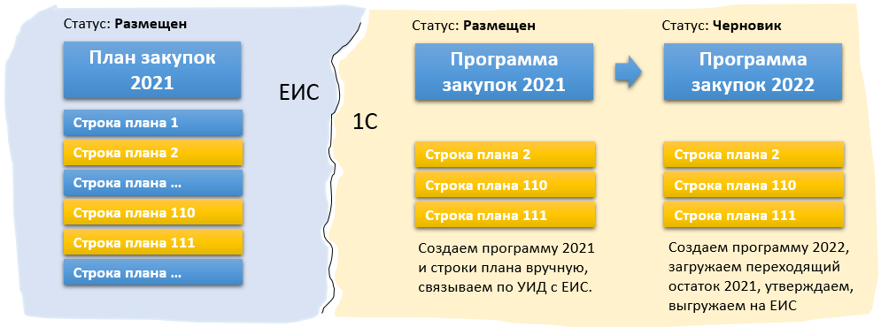
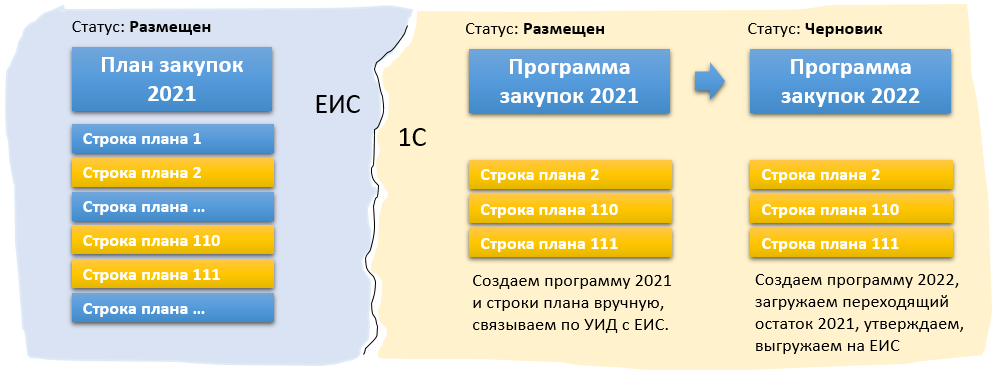

Скриншот. наши действия схематично

Скриншот. наши действия схематично

Скриншот. План закупок на ЕИС

Проверка на наличие в плане переходящих позиций
Первым делом нужно проверить наличие в размещенном на ЕИС плане закупок позиций переходящего периода. Позиций, которые обязательно должны перейти в план следующего периода. Выполнять данную проверку правильнее после предоставления на ЕИС отчетности по заключенным договорам отчетного года так как именно они содержат информацию об исполнении плана. Также целесообразно получить информацию у менеджера по закупкам, который точно может ответить на вопрос о наличие в плане позиций переходящих в следующий период. Чтобы проверить наличие переходящих позиций на текущий момент выполните несколько шагов:
Действия в ЕИС:
1. Откройте ЕИС (план на 2021 год имеет статус размещен и номер 2210007555).
2. Вводим вручную в ЕИС новый план закупок на 2022 год.
3. Если план содержит строки переходящие из плана предыдущего периода, то будет выдано сообщение с перечислением номеров позиций. Можно нажать кнопку отменить тк мы получили необходимую информацию и сохранять план нет необходимости. Если создали, не страшно, можно удалить.
Первым делом нужно проверить наличие в размещенном на ЕИС плане закупок позиций переходящего периода. Позиций, которые обязательно должны перейти в план следующего периода. Выполнять данную проверку правильнее после предоставления на ЕИС отчетности по заключенным договорам отчетного года так как именно они содержат информацию об исполнении плана. Также целесообразно получить информацию у менеджера по закупкам, который точно может ответить на вопрос о наличие в плане позиций переходящих в следующий период. Чтобы проверить наличие переходящих позиций на текущий момент выполните несколько шагов:
1. Откройте ЕИС (план на 2021 год имеет статус размещен и номер 2210007555).
2. Вводим вручную в ЕИС новый план закупок на 2022 год.
3. Если план содержит строки переходящие из плана предыдущего периода, то будет выдано сообщение с перечислением номеров позиций. Можно нажать кнопку отменить тк мы получили необходимую информацию и сохранять план нет необходимости. Если создали, не страшно, можно удалить.
Скриншот. Сообщение о наличие в плане переходящих позиций

Поиск УИД размещенного плана на ЕИС
Связывание планов разных систем выполняется по УИД. Нам понадобятся УИД размещенного плана и УИД каждой переходящей позиции. Чтобы найти эти УИД нужно выполнить следующие шаги:
Действия в ЕИС:
1. Находим в списке планов наш размещенный план закупок.
2. Открываем печатную форму.
3. Сохраняем ее в xml файл.
4. Открываем файл и копируем значения(УИД плана),(УИД позиций)
Скриншот. Печатная форма
1. Находим в списке планов наш размещенный план закупок.
2. Открываем печатную форму.

Скриншот. Сохранение печатной формы плана в файл xml

Скриншот. УИД плана на схеме xml

Создание программы закупок на 2021 год в 1С
Наличие переходящих позиций информирует нас о необходимости создания в 1С программы закупок за 2021 год и связыванию по УИД размещенного плана закупок 2021 на ЕИС с УИД программы закупок 1С. Нам понадобиться зарегистрировать и переходящие позиции (строки плана) в 1С. Другие позиции плана ЕИС переносить в 1С не нужно.
Действия в 1С:
1. Создаем программу закупок на 2021 год.
2. Создаем переходящие строки плана закупок на 2021 год.
3. Утверждаем каждую строку плана, вводим (УИД позиции из ЕИС)
4. Заполняем программу закупок строками плана (вкладка "Позиции"), вписываем номер размещенного плана ЕИС, вводим (УИД плана закупок ЕИС), меняем статус на Размещен.
1. Создаем программу закупок на 2021 год.
Скриншот. Программа закупок

Скриншот. СПЗ (строка плана закупок)